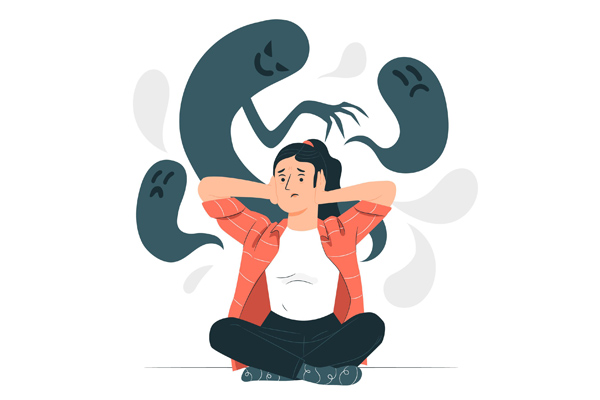

TRATAMIENTO
LLa terapia cognitiva conductual ayuda a guiar al cliente a través de un proceso de identificación y reconocimiento de los pensamientos específicos que lo llevan a recurrir a Internet en busca de consuelo o satisfacción.la terapia puede ayudar a alguien que es adicto a Internet a controlar su uso.Debido a que la adicción a Internet se caracteriza por una incapacidad para controlar el uso de Internet, esta opción de tratamiento ayuda a enseñar a la gente a autocontrolarse y a controlar sus impulsos. Al emplear esta opción de tratamiento, los síntomas de abstinencia pueden reducirse al mínimo para que la persona pueda dejar de usar Internet de forma segura y lenta. Sin embargo, esto requiere una gran cantidad de responsabilidad personal y confianza entre el cliente y el consejero.
Actualmente no hay medicamentos aprobados para el tratamiento específico de la adicción a Internet, por lo que muchas personas recurren a la consejería individual en busca de ayuda para la superación de la adicción a Internet. El objetivo de la consejería para la adicción a Internet es a: